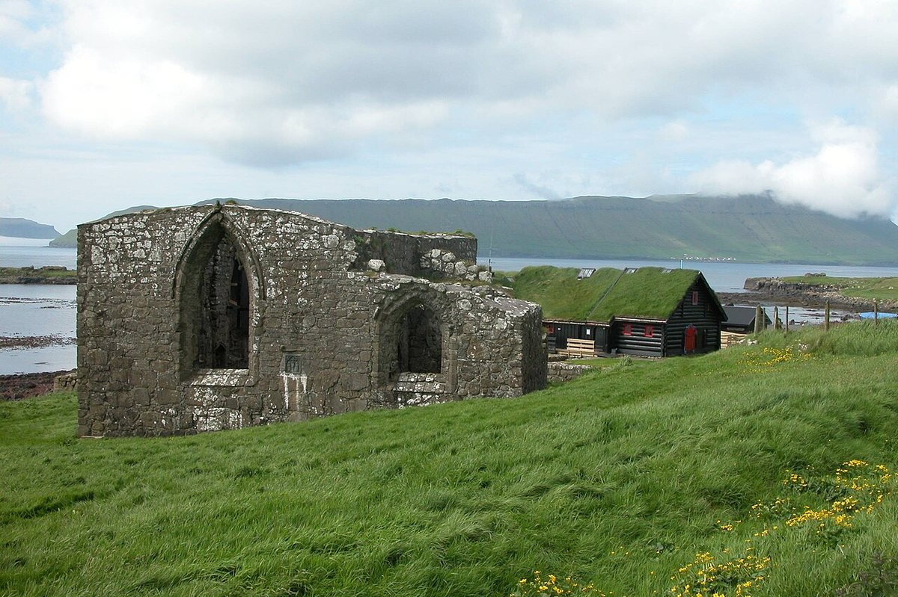

Eiðisvatn sediment study — maps, cores and age model ↗
Open-access figures locate the lake and sampling evidence. The study does not claim to have identified the early settlers.
Deep dives / Europe & Mediterranean
The Faroes sit within the sea routes connecting northern Britain, Norway, Iceland and Greenland. Their history includes early activity before the familiar Viking narrative, local assemblies and changing external crowns. Sea connections did not erase an island language or community.
Earliest supported regional evidence through 1900. Modern discovery, conservation and reference-map information retain their actual dates. This is selected evidence, not a complete census of every community or event.

The whole regional area, with modern terrain and coastlines. Point dates refer to historical evidence; the relief does not reconstruct ancient ice, sea level or political control.
370–610 CE, modelled 95% dating interval
Sheep DNA and fecal biomarkers indicate human introduction of livestock centuries before the familiar Norse settlement period. [1]
62.28°, -7.06°Ninth century CE
Norse settlement belongs to the ninth-century expansion across the North Atlantic. [2] [1]
62.10°, -6.90°Around 1035 CE
The conventional political chronology places the Faroes under the Norwegian crown in 1035. A retrospective constitutional anchor, not proof of uniform day-to-day control. [2]
62.01°, -6.77°1814 CE
The Faroes remained under the Danish crown when Norway passed into union with Sweden. Treaty relationship; not a claim that the islands had no local political life. [4]
62.01°, -6.77°1816 CE
Danish authorities abolished the Løgting in 1816. The map marks an institutional act, not the disappearance of Faroese identity. [3]
62.01°, -6.77°1846 CE
Hammersheimb developed an influential orthography for Faroese in 1846. City reference only; the marker is not the documented desk where the system was written. [3]
62.01°, -6.77°1852 CE
The Løgting was re-established with an advisory role in 1852. Institutional date; powers should be read in their nineteenth-century setting. [3]
62.01°, -6.77°1856 CE
The end of the monopoly widened opportunities for Faroese commercial trade. The date is a legal change, not the beginning of all local exchange or a measured surge on every route. [2]
62.01°, -6.76°351–543 and 601–765 calibrated CE
Two groups of peat ash and charred barley beneath later structures supply direct archaeological evidence of earlier Faroese activity. [5]
61.84°, -6.80°Lake sediments at Eiðisvatn contain sheep DNA and fecal biomarkers that indicate livestock and human activity before ninth-century Norse settlement. The study dates the first signal to around 500 CE, within a range of 370–610 CE. Separately, charred barley from two peat ash layers at Á Sondum, on Sandoy, produced earlier and later calibrated ranges. Neither record identifies the communities responsible. [1] [5]
The published 95% interval is a dating result for the environmental signal. A broad bar on the timeline must not be read as continuous habitation throughout every year of that bar. The lake catchment is the evidence’s spatial setting, not a map of the entire early population. [1]
Ninth-century settlement connected the archipelago with the wider Norse world. The local sequence should be kept distinct from later incorporation under a crown. Voyages, migration and political authority are separate layers. [2]
The Faroes followed changing Norwegian and Danish crown relationships. The 1814 settlement retained them under Denmark while Norway entered its Swedish union. Their separate jurisdiction and cultural identity did not become an empty detail in that diplomatic change. [4]
The assembly’s abolition in 1816 and restoration as an advisory body in 1852 mark institutional change. They do not imply equivalent political powers before and after, or a modern franchise in either period. [3] [6]
Hammersheimb’s orthography in 1846 belongs to a written-language history that drew on a continuing spoken language. The Tórshavn marker is a regional reference, not a claim that one building contains the whole story. [3]
The royal monopoly ended in 1856. Fishing and export commerce expanded in the later nineteenth century, connecting changes in law with work at sea. This does not mean that exchange had been absent before the legal change. [2]
Whole-island modern relief shows the physical setting of settlement and travel. Early evidence, institutional dates and harbour references have different precision. Blank years are gaps in this selected collection, not declarations that the islands were uninhabited. [1] [4]
Open the source maps for their original detail, legends and dates. Their coverage and reproduction terms belong to the issuing institution.
Open-access figures locate the lake and sampling evidence. The study does not claim to have identified the early settlers.
Figure 1 locates the site on Sandoy. The section drawings distinguish the earlier dated ash deposits from the later structures.
Open this era on global Explore ↗ Open Europe & Mediterranean atlas ↗ Climate, sea level & ice-sheet context ↗
Sources checked and linked above; geological and historical dating methods follow the primary papers.